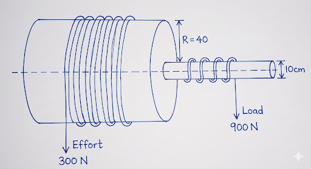
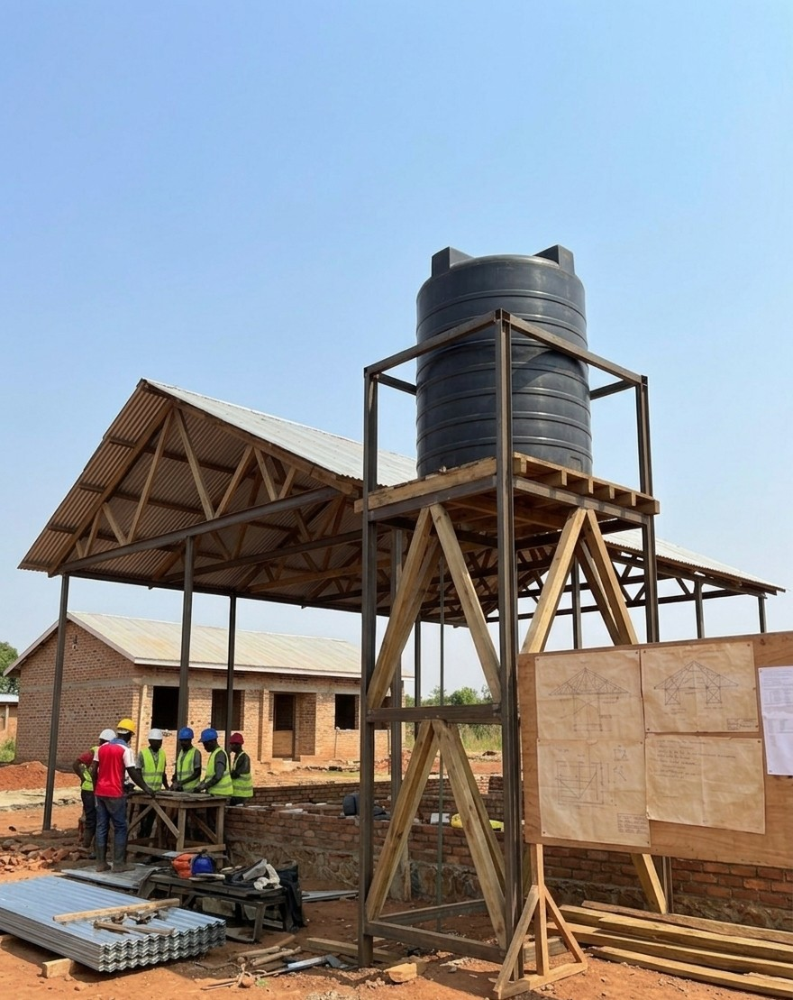
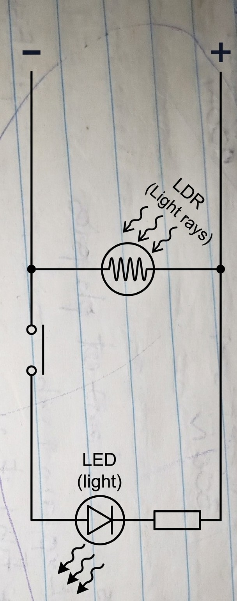
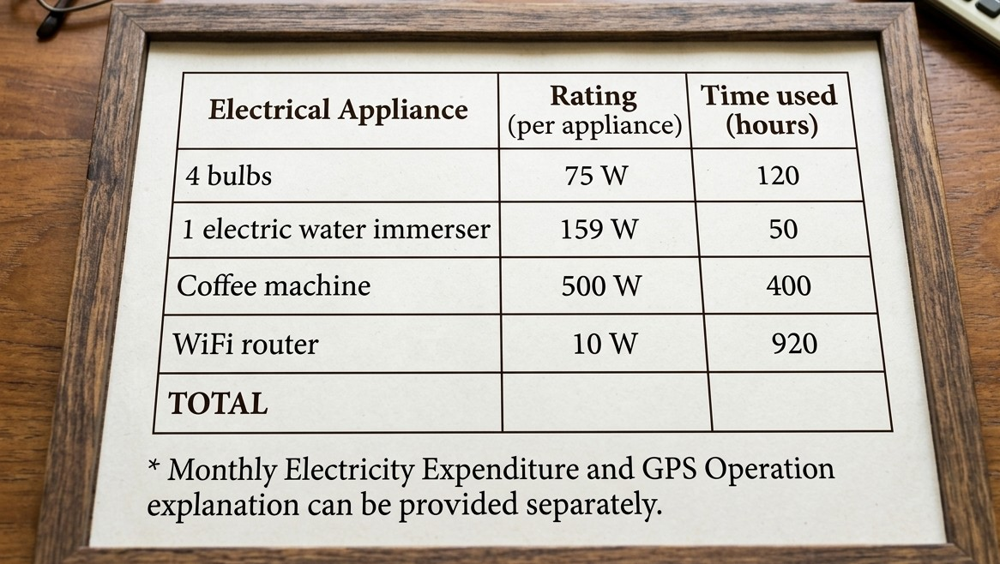

A construction mogul in Kampala just landed a massive government contract to clear land for a new trade center. There’s a catch: the deadline is tight, and he’s been ordered to work through the night to finish on time.
His main road-clearing tractor isn't equipped for night work, so he has his mechanics rig up a new lighting system. They install two high-beam headlamps (H_1, H_2) so the driver can see the road, and four parking lamps (P_1, P_2, P_3, P_4) so the machine is visible to other workers.
The mechanics hand him a wiring diagram with two switches, but they didn't explain how to use it. The mogul is a businessman, not an electrician—he’s staring at the drawing (with switches k_1 and k_2) and he's confused. He needs to know how to light up the whole site for a work shift, and how to keep just the parking lights on when the tractor is idling so he doesn't blind the rest of the crew or drain the battery.
 While he's figuring out the lights, his engineers are arguing in the background. They want to swap the tractor's heavy diesel engine for a petrol one, claiming it'll be more reliable for quick starts in the middle of the night, and they need a way to make sure the drivers don't put the wrong fuel in the wrong machine.
While he's figuring out the lights, his engineers are arguing in the background. They want to swap the tractor's heavy diesel engine for a petrol one, claiming it'll be more reliable for quick starts in the middle of the night, and they need a way to make sure the drivers don't put the wrong fuel in the wrong machine.
During the D.R.C rebel war the leader of the Ugandan Support Army(USA) he realized that the rebels had the advantage of surprise but he had no idea where they can be hiding and spotting them at the same time.
The 1st Luitenant had an idea he what to build the device they could use but he was sniped down to death. He had pieces of broken plane parts and pieces of rectangular wood. But they saw the rebels.
The soliders where chasing the rebels but the rebels crossed a valley before they reach and planted landmines all over their road and they couldn't pass them. But there was a bridge which when one tried to cross fell down and died so they where also confused how to cross.
Task:
(a) What device might the soilders do to spy on them and explain.
(b) How will the soilder cross the bridge.
.
At a Kalangala fishing ground, there was a terrible storm. The wind blew down trees and a hailstorm covered the water. Residents said there were no more fish, but surprisingly the fish were alive but lived near the bottom.
To increase fishing productivity, the government installed a wheel and axle system on boats to catch fish from deeper waters. The requirements for the machine are:
Velocity Ratio (V.R.): Above 3
Mechanical Advantage (M.A.): 3
Efficiency (\eta): Above 74.9%
Machine Data from Diagram:
Radius of the Wheel (R) = 40cm
Radius of the Axle (r) = 10cm
Effort (E) applied = 300N
Load (L) lifted = 900N

(b. Evaluate th machine quality
- Power supply to the relay module.
- Digital pin output from Arduino (use a Multimeter).
- Ground connection continuity.
A company has sold a new security light. Your neighbour had one. The electrician installed the circuit in the parallel system to help Lamp C.
He looked at the circuit diagram but was confused about the function of the ammeter, and he was told that the rectangular things are resistors which stop a certain amount of electricity passing through the circuit. The batteries are rated 3.0 V each.
When he was going to work the next day he had a fatal accident and he was taken to hospital where to get an analysis on his skeletal framework by a when he saw a picture of his bone he was unsure of how the doctor acquired such an inter-structure picture.

Task:
As his neighbour:
(a) Help him know how much resistance do the resistors resist before going to the lamp A, lamp B, Lamp C.
(b) Explain how they could get a picture of his skeletal framework.
---
A new company called agrisera has been built in the district. It processes edible agro produce for the residents at affordable prices. But it has received health complaints of people discovering insects, lice and tiny bugs in the product. The CEO called his employees to inspect. Some ones said that there are bugs under the awkward places. But there was a way of finding out because these flashlights could not reach.
While transporting agri products on foot for door-to-door service, two delivery men carried a food tray to a place 25 cm away from the man A and is 75 cm away from B. When they were done, the boss asked how did they remember, so he can increase their pay. The whole round food and dishes they all complained.
*Hint: (Weight of tray was 50N
Task:
As a student of physics:
(a) Help the company to find a device they can use to inspect awkward places.
(b) Help the delivery men work out the agreement by finding what the lifted more weight
To increase convey speed and productivity of products, a gear system has been installed which consists of gear wheels S and s with 80 and 20 teeth respectively. The gears are fastened together on axles of equal diameter.
The manager of the company suggested they should test the machine system. An effort of 150 N was attached to a string wound around one axle, which raised a load of 450 N attached to another string wound around the other axle.
Support Material
The engineer stated that to increase convey speed, the Velocity Ratio (V.R.) should be above 5 and its efficiency should be above 75.5%.
 There was a shortage of water in the company and they need a lift pump to help them pump water from the underground, but did not know how its structure looked like, let alone its mode of action.
There was a shortage of water in the company and they need a lift pump to help them pump water from the underground, but did not know how its structure looked like, let alone its mode of action.Task
(a) Help the company know if the machine is ready to start conveying.
(b) Explain the structure and mode of action of a lift pump
Lion Motorbikes has just received numerous complaints regarding rising fuel prices. Consequently, the owner, Morgan, instructed the workers to install a system where all the lights are connected to a rechargeable solar power battery on the motorcycles. The workers composed the circuit diagram below to visualize the integration.
While testing the engine temperature during full-speed operation, the markings on the workers' thermometer faded. They were unable to source a replacement and currently do not know how to recalibrate the existing one.
Task
(a) Explain to the workers how the circuit works.
(b) How to recalibrate the thermometer.
A food delivery company had an urgent call from a nearby Red Cross service and was given directions. On their way, they moved at a uniform speed of 8 m/s for 5 seconds, then accelerated to 14 m/s in 3 seconds. They then retarded (decelerated) in some traffic jam to 2 m/s in 4 seconds, after which they accelerated to 20 m/s in 3 seconds. Finally, they stayed at a constant speed for 5 seconds, before retarding to 0 m/s in 5 seconds.
Upon reaching their destination, they were paid for the food but did not know how much they should be paid for transport based on the distance covered.
Task
As a student of physics, determine the distance they covered.
Your friend has just bought a new lens camera to take to this year's science trip, but on testing it out, he discovered that the lens in the camera was not powerful enough. So he went to the Hard Lens Lane and was told that the lens he had was a low-power lens. He was also told by the attendant that his lens has a focal length of 15 meters.
The doctor gave him a little advice, telling him that for a lens of your friend's desired quality, he must attach a similar lens so that the power of combination is above 116.7 Dioptres to meet his needs. However, he did not know how to find the focal length of the second lens he needed.
Task
Help your friend find the desired focal length of the new lens he has to combine with his lens.
Morgan was a night-shift lorry driver driving through the night in his shaky lorry. He reached into his pocket to light a cigarette and observed the rough part of his matchbox was missing, so it could not light. Suddenly, he did not expect the tree in front of him. He applied the brakes, but the wheels stopped and the lorry skidded on the slippery road. He crashed into the tree but, fortunately, did not sustain any injuries.
The next day, after returning from the hospital, he changed the tires on his truck and was moved to the day shift. It was a hot day, and as he was driving, his tires suddenly exploded. He is now facing the risk of being fired and needs a scientific explanation for his boss.
Task
Help Morgan to explain:
(a) (i) Why the tires did not stop the lorry even though he applied the brakes.
(ii) Why his matchbox did not light when struck.
(b) Using kinetic theory, why his tires exploded.
During a science trip at your school, you went to a dam and noticed the bottom of the dam was larger than the top of it. The trip guide told them there was a reason, but none of them believed they knew why. On the way back, they passed another dam in construction and surveyed the construction site. They saw a crane with a metallic wire string to support weight. They were told the wire had a cross-sectional area of 10\text{ cm}^2, which increased in length from 20\text{ m} to 25\text{ m} when a force of 500\text{ N} was applied. After they left, they realized they had forgotten to ask about the tensile stress, tensile strain, and Young's modulus, and didn't know how to find them.
Task
Help the students know why the dam was thicker on the bottom than on top.
Find the tensile stress, tensile strain, and Young's modulus of the metallic wire string on the crane.
A construction worker was working on a building close to a bridge and noticed that the bridge had rollers at one end. He also observed that the bridge structure contained various triangular shapes with unusual names called ties and struts. He was told these components were helpful for many reasons, but he could not remember how to identify or differentiate between them.
Task
As a student of physics, help the construction worker:
(a) To know the importance of the rollers.
(b) Define and identify all possible ties and struts.
The Government of Uganda has started a new nuclear energy program in your home village. However, the residents do not see the use of nuclear energy since they could barely afford normal electric energy. The government wants the villagers to be enticed by the idea of an atomic energy plant in different sectors of real life.
Task
As the village spokesperson:
(a) Help the village know the importance of nuclear energy in at least 5 sectors of real life.
A cleaner was cleaning the upstairs of a 3-story building. He was of mass 78kg. When he finished up with the middle floor he went up but he felt lighter as if he could fly but he couldn’t. When he was done with the floor he went down hoping to feel the sensation of being light but instead he felt heavier and he went to his cleaner friend to explain but he too was confused.
Hint: The lift was going at an acceleration of 2\text{ m/s}^2.
Task
Help the cleaner basing on mathematical evidence why he felt heavier going down and lighter going up.
A driver had just got his license and [was] driving on a hot day on a road where he saw a pool of water. He was thirsty on a hot day so he drove ahead so he could get a sip of water but even with the continuous driving he could not reach it. He later realized it wasn't real so he gave up and went to a nearby shop, bought some water and explained what he had just seen.
Task
As the shopkeeper, explain to the driver how he was able to see a pool of water.
The sky was just starting to drizzle with a little bit of sunlight and your brother starts to doze off. When he wakes up he sees a beautiful pattern of colours which you told him was a rainbow, but he thought it was a dream.
Task
Explain to your brother that is not a dream.
During the construction of a hospital health center in your village, they wanted to build water tanks and roofing trusses but did not know why the engineer preferred using the triangular structure.
They wanted the tensile stress of the iron sheets of the roofing truss to not exceed 1.8 \times 10^7Nm^-2. The iron sheets they had are 200kg in mass and have a cross-sectional area of 20meters. Will the tank of mass 500kg and 10meters [be supported]?
Support material:

An inspector was inspecting the building and was surprised to see a light with no switch to turn it on, so he called you to explain to him.
Support material

Task
(a) Explain why the engineer preferred to use the triangular structures.
(b) Help the constructors know if the iron sheets and tank are in proper condition.
(c) Elaborate to the inspector how the light works.
The government of Uganda has built a bridge from Kalangala islands to connect to the mainland. Mr. Martin was driving his truck and was stopped 50metres from the start of the bridge at an inspection point to see if his car meets qualifications to cross the bridge which were:
The car's weight did not have to exceed half the bridge's weight.
The force exerted by the car on B did not have to exceed 200kN.
The tension caused by the car did not have to be beyond 100kN
If the car did not meet at least 2 of the qualifications, it will not be allowed to pass.
Task
Help Mr. Martin know if his car will be allowed to cross the bridge (basing on calculations).
There are complaints about a person who sold a plot of land to another person. The one who sold claimed that he sold the buyer exactly 500m of land but when they asked the buyer, he said that the tape measure had its own problems.
A road is being built in your area but all the houses near the road construction site are to be demolished. Your friend Ssenyondo has his house near the roadside, so he gets two pieces of wood and claps them together, and another sound is heard 0.8seconds later.
(Hint: The speed of sound in air is 320ms^-1. The government will demolish properties below 100m from the road.)
Task
(a) Find out if the metallic tape measure elongated Temp = 5°C.
(b) Find if Ssenyondo's house will be demolished.
John was sailing on the waters of Lake Victoria to get some fish on his metal boat using a net when he drives through the lake and hoists his catchings using a pulley.
He wanted to increase its velocity ratio to 10 but did not even know its original V.R. After he was done fishing he saw that the boat was sinking slowly by slowly and he hadn't a clue why. He realized a sudden need for a new boat. For a density 530kgm^3, he only had the following materials: 2000kg of timber has density 550kgm^3, Aluminum has volume 4.5m^3.
Task
(a) Help John increase the velocity ratio of his pulley (diagram).
(b) What advice with explanation would you give John on how to make the boat?
A businessman who owns the Moon Bean in Kampala has been confused about the money he pays for the business's electric consumption, so he tabulated the results as below:

;He was also looking through his phone's Google Maps app and could see his shop on the screen but he had never advertised it; he was perplexed.
Task:
(a) Help the businessman to find his monthly electrical expenditure. (Hint: The rate for 1 unit = 200UGX).
(b) Edify how the Google Maps system works.
Uganda has opened up a space program called the Uganda AeroSpace Program to explore outer space, but due to the low information level of workers who are educated about it, it has been delayed. The Chief Technological Officer (CTO) of the program has collaborated with a neighboring country’s program. After brainstorming, they decided to make side-by-side boosters reusable so as to [save] funds. But they had no idea about how to attach the boosters for reusability.
Task
As the Assistant CTO, help them to:
(a) Educate the workers on how a rocket works.
(b) Explain a device that can attach the booster rockets.